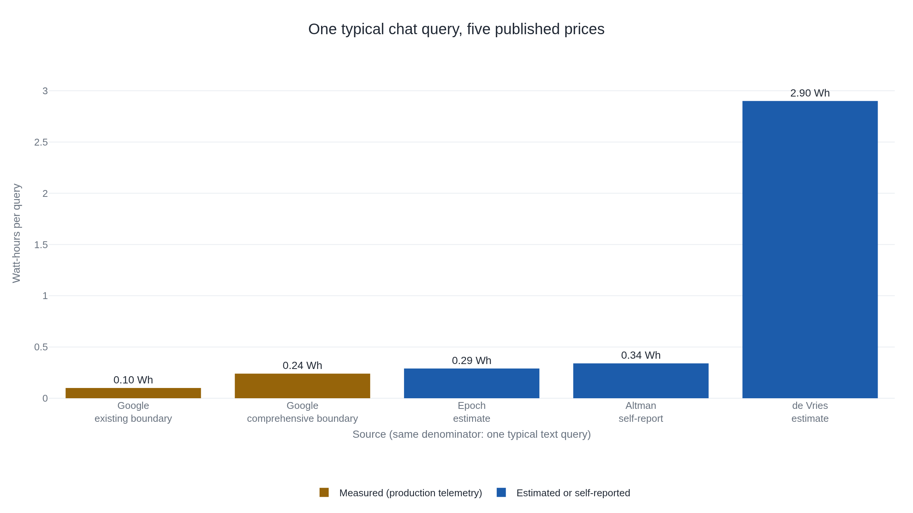

A ChatGPT query costs 0.3 watt-hours by one honest measure and 2.9 by another
The gap traces to four stacked assumptions, and Google's own 2025 paper shows the same query's number can swing 2.4x again depending only on what a company chooses to count.
Why this matters
A number like "one ChatGPT query uses 3 watt-hours" or "one AI reply drinks half a bottle of water" travels fast because it sounds like a measurement. It is closer to a small model with hidden inputs: how long a reply runs, which chip answers it, how hard that chip is pushed, and where the counting starts and stops. Change any one of those and the same query prices out differently. By the end, the reader can pull apart any published per-query energy or water figure into the choices that built it. They can see how a 2009 search estimate and a 2023 executive's guess became today's "10 times a Google search."
- 01
- Groq's 270 tokens a second and Anyscale's 185 are both true: how a published inference-speed number hides the same kind of measurement choices this lesson unpacks for energy.
- 02
- Andy Masley, "Using ChatGPT is not bad for the environment": answers the specific worries a reader carrying a scary per-query number is likely to have, comparison by comparison.
One query priced two honest ways
Ask ChatGPT one ordinary question, and two carefully documented estimates disagree about what it cost in electricity. Epoch AI, an independent research nonprofit, built a model from the chip that answers the question and put a typical reply at about 0.3 watt-hours.1 Alex de Vries, writing in the peer-reviewed journal Joule, worked from OpenAI's reported hardware fleet and put a typical reply at about 2.9 watt-hours.2 Both authors show their work. The two numbers describe the same rough action and land roughly ten times apart.
A watt-hour is a small unit: 0.3 of one is, in Epoch's own comparison, less than an LED bulb or a laptop burns in a few minutes.1 2.9 watt-hours is the same bulb left on for closer to half an hour. Ten times apart is not a rounding error or a scandal: "per query" is being asked to name a fixed thing when it names none. The phrase hides four choices any estimator has to make.
The stakes reach past one reply. Data centers draw just over 1% of the world's electricity, a share the International Energy Agency expects to more than double by 2030, to about 945 terawatt-hours a year.3
What "per query" actually multiplies
Energy per query is really two numbers multiplied together: the energy one output token costs to generate, times how many output tokens a typical reply runs. A model writes its reply one token at a time, a token being a word or a word-fragment. Each token costs a fresh pass through the whole model. A longer reply is one of the two terms in the multiplication. The other term, energy per token, depends on how many parameters do the arithmetic, which chip runs it, and how hard that chip is pushed against its rated maximum.
Epoch's 0.3-watt-hour figure names these pieces one at a time. Generating a token takes about two floating-point operations, basic arithmetic steps, for every parameter doing work on it.1 GPT-4o is a mixture-of-experts model, meaning only a slice of its parameters activates per token. Epoch estimates 100 billion active parameters out of roughly 400 billion total.1 So one token costs about 2 × 100 billion, 200 billion FLOP. Epoch assumes a typical reply runs 500 output tokens, about a full page of typed text, putting one query at roughly 500 × 200 billion, 100 trillion FLOP.1 An Nvidia H100 chip can do up to 989 trillion FLOP a second. Epoch assumes it only reaches 10% of that serving real traffic, the gap "utilization" names between rated top speed and what a busy chip delivers. That puts the job at about one second of H100 time.1 That second draws roughly 1,500 watts, an H100 cluster's full draw with servers and cooling included. Epoch discounts that to 70% of peak for how the chip actually runs.1 One second at 1,050 watts is 1,050 watt-seconds. There are 3,600 seconds in an hour, so 1,050 ÷ 3,600 ≈ 0.29 watt-hours, Epoch's headline number, built from named assumptions rather than asserted.
De Vries's 2.9-watt-hour figure differs at nearly every junction. Its source, a SemiAnalysis hardware cost model from February 2023, assumed GPT-3.5 ran dense: all 175 billion parameters active on every token, not a mixture-of-experts slice.4 It also assumed the older Nvidia A100 chip and, the single biggest lever, 2,000 output tokens rather than 500, four times Epoch's count on its own. The active-parameter count is roughly 1.75 times higher, 175 billion against Epoch's 100 billion. Multiplied together, those two stated assumptions raise the estimate close to sevenfold before the chip generation or the power accounting enter.2 De Vries's chain also turns compute into energy using the A100's rated maximum draw, 800 watts per chip run continuously.1 Epoch instead applies the same 70%-of-peak factor used above. Neither paper reduces the chip-generation gap or the peak-versus-actual power gap to a single clean multiplier, so none is invented here. Output-token count and active-parameter count, the two assumptions each paper states as a number, explain most of the ten-times gap between two honest estimates of the same reply.
Two ways to price the same query
Every energy-per-query number is built one of two ways, each with a different blind spot.
Epoch's method is bottom-up: model the actual chip serving the actual model, term by term. Its blind spot is that it needs assumptions an outsider can estimate but never confirm: the true mixture-of-experts split, the fleet utilization, the output-length distribution.
De Vries's method is top-down: start from an estimate of the whole hardware fleet's power draw and divide by how many requests that fleet serves. SemiAnalysis, the hardware cost model de Vries builds on, put OpenAI's ChatGPT fleet at 3,617 Nvidia HGX A100 servers running around the clock, priced at 564 megawatt-hours a day.2 Divided across an assumed 195 million daily requests, that is 564,000,000 ÷ 195,000,000 ≈ 2.9 watt-hours a request. The blind spot runs the other way. The method never touches a single token or a single chip. It trusts an outside estimate of the fleet's size and traffic, numbers only OpenAI can verify, and folds every real difference between an idle GPU and a busy one into one company-wide average.

Epoch's 0.29 and Sam Altman's self-reported 0.34, a blog post that states the number with no model, chip, or boundary disclosed, sit close together just above Google's own figures.6 The closeness to Epoch's independent estimate looks like corroboration. It very likely is not. Google's own paper notes that Altman's post "provides no explanation of the measurement boundary or methodology," making it "impossible to compare with other estimates."5 Reading the post directly confirms it: no model, no boundary, no method. Two numbers landing near each other by coincidence of magnitude is not the same as two methods agreeing.
A number that moves without the query changing
Google's own two figures, 0.10 and 0.24 watt-hours, are the same median Gemini Apps text prompt, measured in the same May 2025 window and paper, not two different products or months.5 The only thing that changes between them is what counts as part of serving the query. The narrower figure counts only the active chips doing the arithmetic, across the company's most-efficient tenth of data centers, the boundary most published estimates, Epoch's and de Vries's included, implicitly use.5 The fuller figure adds the idle machines waiting for the next request and the ordinary CPU and memory sitting beside the accelerator chip.5 It also averages across data centers of every efficiency level, not just the best ones. Counting more of the real system more than doubles the number, 2.4 times, by Google's own account, with the query unchanged.5
This is the same problem, applied to a fourth choice the chart does not state: where the accounting starts and stops. 0.24 watt-hours and 0.10 watt-hours can both be honest measurements of the identical prompt.
The 10x claim rests on a 2009 search estimate
The most-repeated version of this claim is not really an energy measurement. In February 2023, Reuters asked Alphabet's chairman, John Hennessy, about language-model search costs, and he said an exchange with a model "likely cost 10 times more than a standard keyword search."7 It was a verbal estimate, not an engineering disclosure. De Vries then multiplied that 10x by a figure Google published in 2009: a company blog post said a search used about 0.0003 kilowatt-hours, 0.3 watt-hours.8 Ten times 0.3 watt-hours is about 3, the number that then circulated as "ChatGPT uses 10 times the energy of a Google search."2
Neither factor in that multiplication measures the thing being compared. The 10x is one executive's estimate, not a side-by-side study. The 0.3-watt-hour baseline is seventeen years old, from before Google served an AI-generated answer to anyone. Even Epoch, the paper most skeptical of the higher figure, does not attempt to re-measure today's search cost.1 It only flags that the 2009 number is old and could have moved either way since. Epoch's own 0.3-watt-hour estimate for ChatGPT suggests the "3 watt-hour, 10 times" figure is roughly ten times too high.
The water version of the same claim compresses two different kinds of water into one number. Li and coauthors' figure, that a GPT-3-era reply costs 10 to 50 milliliters, or 10–50 such replies per 500-milliliter bottle, sums water evaporated on-site at a data center's cooling towers with water evaporated off-site at the power plant. Each side has its own efficiency ratio: water usage effectiveness on-site, an equivalent ratio for the grid. The combined figure varies nearly sevenfold by location, from 7.1 milliliters in Ireland to 47.5 in Washington, for the identical model and energy assumption.9 Provider self-reports run far lower: Google's comprehensive figure is 0.26 milliliters, about five drops of water,5 and Altman's undisclosed figure is about 0.32, roughly a fifteenth of a teaspoon.6 Part of that gap is real efficiency. But Google's own energy-per-prompt figure is already well under a tenth the size of the 4-watt-hour figure Li and coauthors assumed for GPT-3. Much of the water gap likely follows from the smaller energy base, not cooling technology, a distinction Google's paper does not separate out.5 Altman's figure cannot be checked against any of this: no model, no location, no method disclosed.
The takeaway
0.3 watt-hours and 2.9 watt-hours were never really in disagreement. They answered different questions about the same rough action. Four choices separate them: how many output tokens a reply runs, how many of a model's parameters work on each one, which chip serves it, and how hard that chip is pushed. A fifth choice hides underneath all three: where the accounting for "serving one query" starts and stops. Move any one of those and a perfectly honest number moves with it: sometimes by ten times, sometimes, as Google's own figures showed, by 2.4 times with nothing else changed. The famous "10 times a Google search" line was never a measurement of either system. It was a chairman's guess multiplied by a seventeen-year-old baseline.
- 01
- Hannah Ritchie, "How much electricity does AI consume?" (2025 summary): tracks the running per-query and fleet-wide numbers over time and flags where reported data ends and projection begins.
Sources
- Epoch AI · "How much energy does ChatGPT use?" (Josh You, Feb 2025)
- Alex de Vries · "The growing energy footprint of artificial intelligence," Joule (2023)
- Carbon Brief · "AI: Five charts that put data-centre energy use — and emissions — into context" (Sept 2025)
- SemiAnalysis · "The Inference Cost of Search Disruption" (Feb 2023)
- Elsworth et al. (Google) · "Measuring the environmental impact of delivering AI at Google Scale" (Aug 2025)
- Sam Altman · "The Gentle Singularity" (June 2025)
- Jeffrey Dastin and Stephen Nellis (Reuters) · "For tech giants, AI like Bing and Bard poses billion-dollar search problem" (Feb 2023)
- Google · "Powering a Google search," Official Google Blog (Jan 2009)
- Li, Yang, Islam, Ren · "Making AI Less 'Thirsty'" (arXiv, 2023/2025)